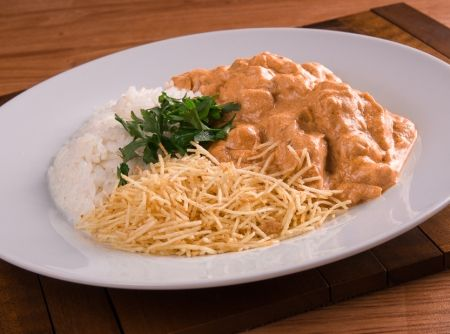

Strogonoff
ingredientes
- Meio quilo de carne em tiras finas (filé mignon, contra filé);
- 1 pitada de pimenta-do-reino;
- 3 colheres (sopa) de manteiga;
- Meia cebola picada;
- 1 tablete de caldo de carne;
- Meia chícara (chá) de conhaque;
- 200g de champignons em conserva fatiados;
- 3 colheres (sopa) de purê de tomate;
- 1 colher (sopa) de mostarda;
- 2 colheres de sopa de ketchup;
- 1 lata de creme de leite;
Modo de preparo
- Em um recipiente, misture a carne com a pimenta-do-reino.
- Em uma frigideira grande, derreta 2 colheres (sopa) da manteiga e doure a carne, aos poucos, em fogo alto.
- Retire a carne e coloque a manteiga restante. Refogue a cebola, junte a carne, acrescente o Caldo e 4 colheres (sopa) de água fervente e mexa bem até dissolver.
- Despeje o conhaque, espere aquecer e incline levemente a frigideira para que o conhaque incendeie e flambe o strogonoff. Aguarde acabar a chama.
- Junte os champignons, tampe a frigideira e deixe por alguns minutos. Acrescente o purê de tomate, a mostarda e o catchup, misture bem.
- Abaixe o fogo, deixe por cerca de 5 minutos, com a frigideira tampada.
- Incorpore delicadamente o Creme de Leite e retire do fogo antes de ferver. Sirva.

ir para página inicial - ir para Receitas Salgadas